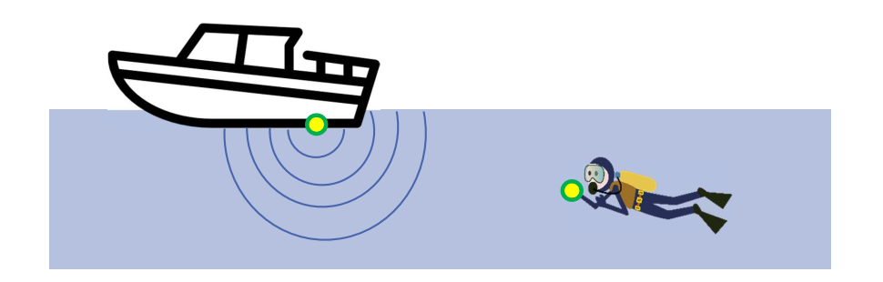
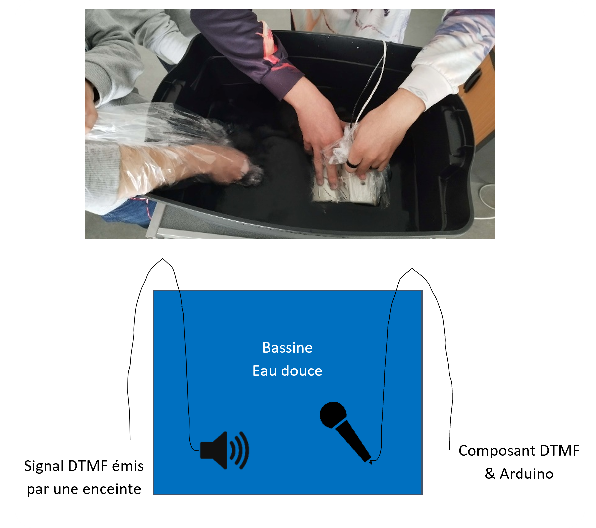
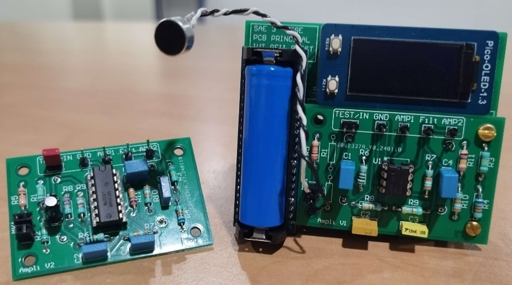

Projet :Montre de communication sous-marine
Introduction et Objectifs du projet
Dans le cadre de ce projet, j’ai exploré l’utilisation des signaux DTMF (Dual-Tone Multi-Frequency) dans des environnements non conventionnels, comme sous l’eau. Mon objectif principal était de développer une chaîne de traitement capable de capter et d’interpréter ces signaux avec précision, même dans des conditions difficiles. Pour cela, j’ai intégré un microcontrôleur, notamment le Raspberry Pi Pico, afin de gérer le traitement numérique. Le projet m’a amené à étudier en détail la propagation des signaux DTMF dans différents milieux et à optimiser les algorithmes de décodage pour garantir fiabilité et performance.


Expérimentation avec le composant DTMF sous l'eau
J’ai mené des tests dans une bassine d’eau pour simuler un environnement sous-marin et observer le comportement des signaux DTMF. L’objectif était de comprendre comment ces signaux se propagent dans l’eau et de déterminer les meilleurs paramètres pour assurer une transmission et une réception fiables. Cette expérimentation m’a permis d’identifier les principales contraintes liées à l’acoustique en milieu aquatique et d’ajuster le système en conséquence.

Conception d'une chaîne d'amplification adaptée pour le traitement par un Raspberry Pi Pico
Pour adapter les signaux DTMF au niveau requis par l’entrée du Raspberry Pi Pico, j’ai conçu un circuit d’amplification en veillant à limiter le bruit et les pertes. Cette étape m’a amené à effectuer de nombreuses simulations de filtres et d’étages analogiques à l’aide d’outils comme LTspice et TI Analog System Lab Workbench. J’ai ensuite réalisé un PCB pour valider le fonctionnement du système dans un environnement de test contrôlé.

Développement d'un code pour l'interprétation des signaux DTMF
Un algorithme de décodage DTMF a été implémenté sur le Raspberry Pi Pico, utilisant le mode DMA (Direct Memory Access) pour gérer efficacement les interruptions et optimiser le temps de traitement. L'algorithme de Goertzel a été choisi pour sa capacité à extraire avec précision les tonalités DTMF à partir des signaux reçus, même dans un environnement bruyant.